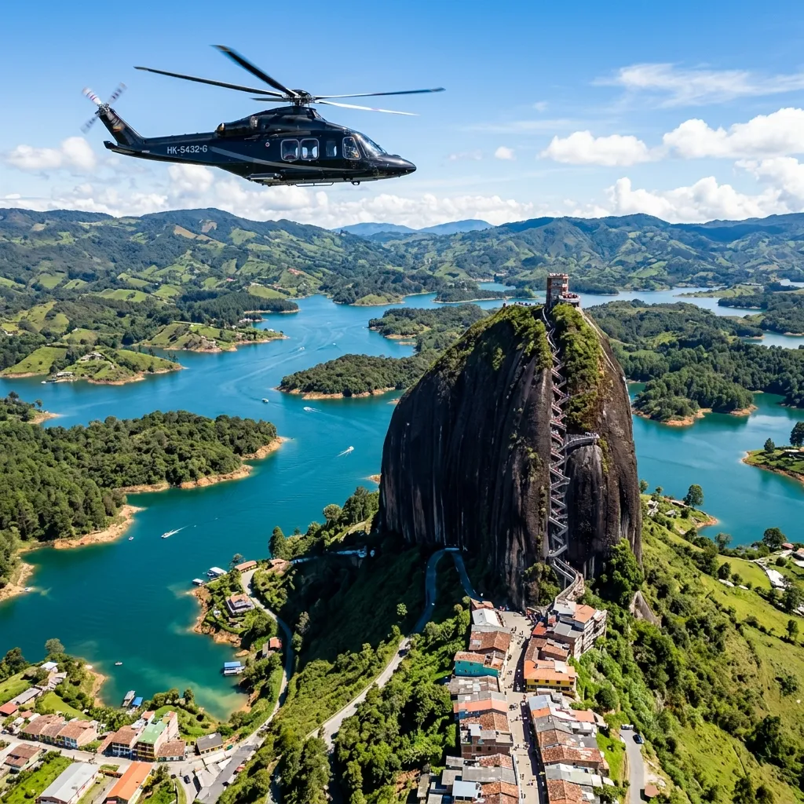
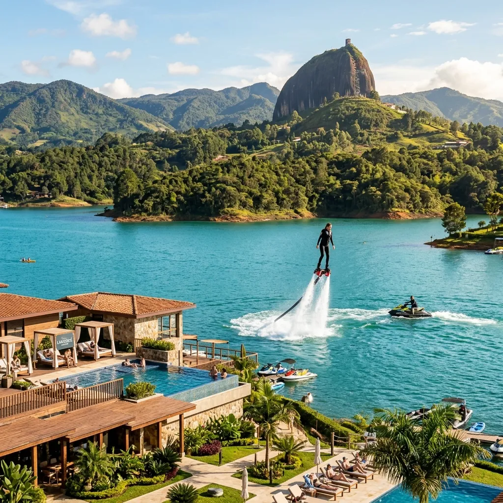

Una experiencia privada extraordinaria que combina un vuelo panorámico en helicóptero, deportes acuáticos premium frente al embalse, cultura patrimonial y un almuerzo gourmet de autor con cata de café.
Visitar los paisajes más icónicos de Antioquia no debería implicar largas horas de atascos viales en carreteras de montaña ni rigideces de horarios masivos. En Threads Travel creemos que su descanso merece el máximo nivel de exclusividad y dinamismo. Hemos diseñado un día libre de fricciones operativas: un sobrevuelo privado en helicóptero que conecta Medellín con el embalse en minutos, una sesión náutica de kayak o flyboard en el resort exclusivo The Brown, un recorrido histórico en tuk-tuk por los famosos zócalos de Guatapé, y una inmersión cafetera íntima con gastronomía contemporánea de origen. Una aventura impecable diseñada para quienes valoran el tiempo y el confort sin concesiones.
Una jornada de día completo diseñada detalladamente alrededor de su adrenalina elegante, bienestar y alta cocina.
Vuelo privado de ida y regreso Medellín - Guatapé.
Zarpe desde el helipuerto de Medellín. Disfrute de un espectacular sobrevuelo de 25 minutos sobre el valle y las cordilleras antioqueñas, aproximándose al embalse y a la imponente Piedra del Peñol desde una perspectiva aérea insuperable, evitando horas de tráfico terrestre.
Sesión premium en The Brown.
Despierte sus sentidos en el exclusivo club de lago. Disfrute de una sesión guiada de 1 hora de flyboard o kayak sobre las tranquilas aguas turquesa de Guatapé, combinando bienestar físico con paisajes montañosos majestuosos.
Paseo colonial en tuk-tuk y ruta de zócalos.
Explore las calles empedradas de uno de los pueblos más pintorescos de Colombia. Recorra sus plazas coloniales en tuk-tuk privado y aprenda la simbología artesanal de sus coloridos zócalos junto a un guía local experto.

Vehículo privado premium lo recoge en su hotel en Medellín para llevarlo directo al helipuerto.
Despegue y sobrevuelo panorámico privado de 25 minutos contemplando las montañas y la Piedra del Peñol.
Traslado terrestre al lago. Sesión de aventura náutica de 1 hora de flyboard o kayak en aguas tranquilas.
Paseo en tuk-tuk privado por las calles históricas y explicación de la tradicional ruta de los zócalos.
Abordaje y vuelo panorámico de regreso en helicóptero hacia el helipuerto de Medellín.
Disfrute de una comida especial que fusiona la tradición andina con gastronomía contemporánea de origen.
Traslado a una hacienda cafetera tradicional para explorar el rito de cultivo, tostión y cata premium.
Traslado privado de regreso a su hotel en Medellín, finalizando la jornada a las 5:00 p.m. aproximadamente.
Esta experiencia promueve una relación consciente con Antioquia, sus paisajes de montaña, el embalse de Guatapé y su ecosistema turístico local. A través de la alianza exclusiva con operadores aéreos formales, aliados de hospitalidad responsable, arrieros y caficultores locales, contribuimos a fortalecer una cadena de valor asociada al turismo sostenible, el agro y la gastronomía de origen. Promovemos una operación respetuosa con el entorno natural y protectora de la seguridad del visitante.
Salida 100% privada para un máximo de 7 pasajeros. La cotización final se calculará de acuerdo con el tipo de helicóptero requerido y la cantidad de pasajeros de su grupo.
Respuestas a sus inquietudes y políticas claras para coordinar su viaje en total confianza.
Por motivos de seguridad aeronáutica y balance de carga de la aeronave, es obligatorio informar el peso exacto de cada pasajero y su equipaje al momento de realizar la reserva. El peso total del grupo determinará el tipo de helicóptero a utilizar (capacidad máxima de 4 o 7 pasajeros). Se permite un equipaje de mano ligero de máximo 5 kg por persona; equipajes más grandes deben ser trasladados previamente vía terrestre.
La operación aérea en helicóptero depende al 100% de la visibilidad y de las autorizaciones de la torre de control de la Aeronáutica Civil. En caso de clima severo, tormentas o baja visibilidad que comprometan la seguridad, el piloto podrá cancelar o retrasar el vuelo. En este escenario, Threads Travel gestionará alternativas de traslado terrestre de lujo premium para el tramo afectado, reprogramará la experiencia para otra fecha, o emitirá un saldo a favor en total transparencia.
No. Las actividades de kayak o flyboard en el embalse frente al resort The Brown están diseñadas tanto para principiantes como para personas con experiencia. Contará con la asistencia personalizada de instructores certificados y chaleco salvavidas de uso obligatorio durante toda la hora de actividad. Sin embargo, no se recomienda para personas con cirugías lumbares recientes, problemas cardíacos o mujeres embarazadas.
Abono: Se requiere un abono inicial para bloquear el helicóptero, los helipuertos y las actividades exclusivas en Guatapé.
Cambios: Permitidos sin cargo de Threads con más de 7 días de anticipación (sujetos a disponibilidad de proveedores).
Cancelaciones: Si cancela con más de 7 días, se reembolsará el saldo exceptuando costos no reembolsables de proveedores. Cancelaciones entre 7 días y 72 horas conllevan una penalidad del 30%; entre 72 y 24 horas del 50%; y menos de 24 horas o inasistencia (No Show) se penalizará con el 100% del valor total.